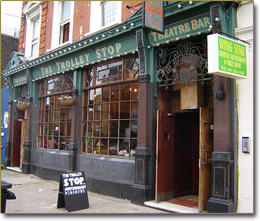
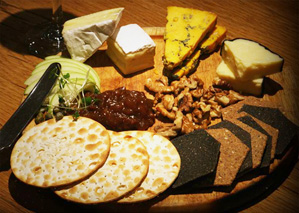

Welcome to Gordon's Crown
Gordons's fabulous Crown in the middle of London is a brilliant British country pub and restaurant. The Crown is a simple and down to earth pub restaurant serving the very best in British grub, albeit with the culinary magic of super Chef Gordon. The pub is a beautiful Tudor building complete with charming low ceilings, wooden beams and wood panelling and the real log fires offer a cosy glow in colder times. Gordon has worked closely with food historians from the Tudor kitchens at Hampton Court Palace to create a menu celebrating the delights of the British culinary past. The menu changes according to the seasons and market availability. Desserts are homely and simply divine. The atmosphere at the Crown is completely unpretentious and wonderfully relaxed, typical of a great British country pub.
We provide our menu on this website for you to check out. You can see and post ratings about the dishes here.
We would be pleased to see you soon.